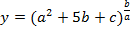
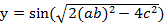
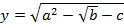
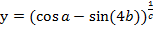
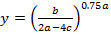
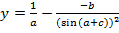
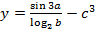
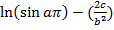

| 1 |
Составить программу, вычисляющую формулу: , с клавиатуры ввести значения переменных a,b,c и вычислить y. Результат округлить до 3 чисел.
Тест: a=2; b=0.6; c=1.25; y=1.883. |
| 2 |
Составить программу, вычисляющую формулу: , с клавиатуры ввести значения переменных a,b,c и вычислить y. Результат округлить до 3 чисел.
Тест: a=1; b=0.2; c=0.05; y=0.261. |
| 3 |
Составить программу, вычисляющую формулу: , с клавиатуры ввести значения переменных a,b,c и вычислить y. Результат округлить до 3 чисел.
Тест: a=3; b=0.64; c=1.29; y=2.629. |
| 4 |
Составить программу, вычисляющую формулу: , с клавиатуры ввести значения переменных a,b,c и вычислить y. Результат округлить до 3 чисел.
Тест: a=1; b=1.25; c=1.25; y=1.383. |
| 5 |
Составить программу, вычисляющую формулу: , с клавиатуры ввести значения переменных a,b,c и вычислить y. Результат округлить до 3 чисел.
Тест: a=5; b=3.24; c=1.46; y=0.392 |
| 6 |
Составить программу, вычисляющую формулу: , с клавиатуры ввести значения переменных a,b,c и вычислить y. Результат округлить до 3 чисел.
Тест: a=3; b=0.29; c=0.08; y=40.956 |
| 7 |
Составить программу, вычисляющую формулу: , с клавиатуры ввести значения переменных a,b,c и вычислить y. Результат округлить до 3 чисел.
Тест: a=2; b=0.48; c=0.01; y=1.086 |
| 8 |
Составить программу, вычисляющую формулу: , с клавиатуры ввести значения переменных a,b,c и вычислить y. Результат округлить до 3 чисел.
Тест: a=1; b=0.47; c=1.25; y=1.197 |
| 9 |
Составить программу, вычисляющую формулу: , с клавиатуры ввести значения переменных a,b,c и вычислить y. Результат округлить до 3 чисел.
Тест: a=2; b=0.88; c=1.38; y= – 1.113 |
| 10 |
Составить программу, вычисляющую формулу: , с клавиатуры ввести значения переменных a,b,c и вычислить y. Результат округлить до 3 чисел.
Тест: a=5; b=0.48; c=5.35; y= – 81.470 |